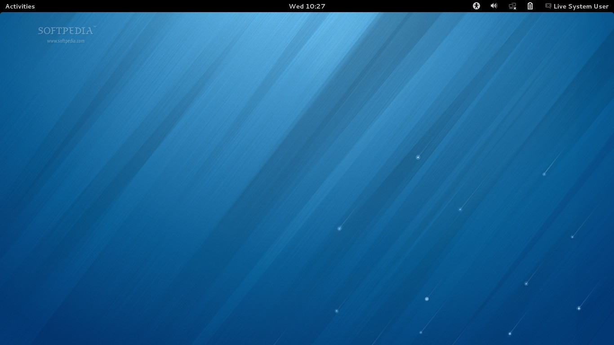

據說今年是近幾十年最冷的一個冬天，環球同此涼熱，從南到北，如同一個人，從頭頂冷到腳心。最難將息之夜，有什麼食物能送來一點溫暖的慰藉？反正我最先想到的是一碗熱騰騰的粥，最好是南方的砂鍋粥。
粥有南北之別，北方喝粥多半簡單樸素，花樣不多，最典型的是臘八粥，再過些天都能在滿大街小巷吃到了。臘八粥講究原料多種多樣，按照作家阿城的說法：“入冬後北方蔬果稀少，人體內維生素取之不易，遂將雜糧豆類混煮，取得最大程度的多種維生素。”
而到了南方，粥的品種頓時花樣繁多起來，只在廣東，就有廣東粥和潮汕粥的區別。廣州最典型的粥是艇仔粥，在北京的不少粵菜餐館裡也常見。其實艇仔粥起源於荔灣，舊時有不少人在這玩，坐著艇仔（也就是小船）在河裡遊玩，其中有艇家以新鮮捕捉的河鮮來熬粥，再讓在河面上撐小艇的小販供應遊人。從前的艇仔粥，以河鮮為主，用魚骨熬粥，乘熱入碗，灼熟生魚片與鮮蝦仁，再撒上炸過的花生和蔥花。艇仔粥重 火候，一定要熱吃，如果加上一點點白胡椒粉，味道更出彩。這樣子似乎更像是廣東的魚生，事實上，艇仔粥就是“加強版魚生”。如今的艇仔粥做法萬千，但是真正的艇仔粥早已經消失，隨著河道的消亡，艇仔都已經不見，據說用河水煮成的粥才別具風味，但是要是現在真有人用河水給你做一碗粥，你說不定會有把這碗粥潑 到他臉上的衝動。
而潮汕粥被當地人稱做“糜”，聽上去古雅很多。在北京有不少主打潮汕砂鍋粥的小店，我常去的一家在鼓樓，火齊潮汕砂鍋粥，一個幾十平米的小店，坐的滿滿噹噹也就能坐20多人，我是眼睜睜看著這家店越來越火，到了天冷的時候，排隊的人能從屋裡排到屋外，令周圍的街坊頓感意外：不就是喝碗粥嗎，至於嗎？
其實我對這種排長隊的小館不太感冒，“帝都黑暗料理界”的規則是“火一家，毀一家”，生意火爆，忙中出亂，蘿蔔快了不洗泥，如果再有點不思進取，菜品可想而知。這家砂鍋粥倒算是例外，粥不像炒菜，它更容易保證質量，無非是料好，鍋好，火候足。這裡的砂鍋不是北京市面上常見的砂鍋，都是從南方一摞摞發過來，是比較粗糙，沙孔比較大的那種。這種鍋燉出來更夠味。招牌是干貝蝦蟹粥，米粒都已經軟爛成泥，味道混合入干貝、蝦、蟹的鮮香，的確是好滋味。如果是一個大冷天，一碗粥下肚，那是種塵世的溫暖。
另外一家名聲在外的潮汕砂鍋粥店在日壇，叫潮香洲。潮汕菜本身是親民體貼，細水長流的。一般來說，砂鍋粥只算海鮮的錢，不算粥錢，看到這裡的菜單上價錢挺貴，其實不算貴。一般人會點這裡的蝦蟹粥，最有特色的粥品，鮮美無比，裡面加入一點雞湯和潮州香芋。我偏愛這裡的田雞粥。大冷天的，幾個人聚在這偏僻的角落裡，喝粥，聊天，搭配著滷水拼盤，油炸花生米，喝一點酒。那種感覺是“綠蟻新醅酒，紅泥小火爐”。
從砂鍋粥體系裡面還衍生出一種粥火鍋，以粥為鍋底，裡面混以雞湯，涮食海鮮肥牛。在龍潭湖公園東門的萬柳閣，這裡不單有絕妙的油條，還有絕妙的粥火鍋，與清湯火鍋不同，粥火鍋更覺有人間氣，它是滯慢的，也是溫暖的，最妙的是米油，在中醫裡這是滋補的上品。上好的雪花牛在粥底里翻滾，上面總會蘸著一些米粒，這樣的涮食的妙處在於粥底里的澱粉給牛肉做了一層保護膜，叫它涮不老，一直保持鮮嫩。
一碗粥，貌似簡單，其實可上天可入地。雖然我挺煩寫美食掉書袋的，但是還是要介紹一款袁枚在《隨園食單》裡介紹的一款神奇雞粥：“肥母雞一隻，用刀將兩脯肉去皮細刮，或用鉋刀亦可；只可刮刨，不可斬，斬之便不膩矣。 再用余雞熬湯下之。吃時加細米粉、火腿屑、松子肉，共敲碎放湯內。起鍋時，放蔥、姜，澆雞油，或去渣或存渣俱可。宜於老人。大概斬碎者去渣，刮刨者不去 渣。”太複雜了，有做這碗粥的功夫，我都能吃飽三回了。 更尋常的做法就是白粥一碗，水米交融，你儂我儂，越是簡單的東西越是吃不膩，如果天天吃袁枚版的雞粥，我會膩煩，天天吃白粥，我也很樂意。
注意：接下来一段因为版权问题所以隐去。
一碗粥而已，在寒冷的冬夜，我們圍著一碗粥相互取暖。食物之中承載希望，在舊時，開辦粥廠是一個傳承已久的傳統，粥可富貴，也可充飢，一碗粥似乎微不足道，卻救活了多少流離失所的人們。一碗熱滾滾的砂鍋粥，來自南方大地，剛端到桌子上的時候，粥還在裡面翻滾，滾燙，它似乎也有一顆勇敢的心，在冷的夜裡，張嘴都是白氣，塵世折騰，唯有溫暖與這碗粥不可辜負。一碗粥，告訴我們安慰和愛的力量。
（全文完）